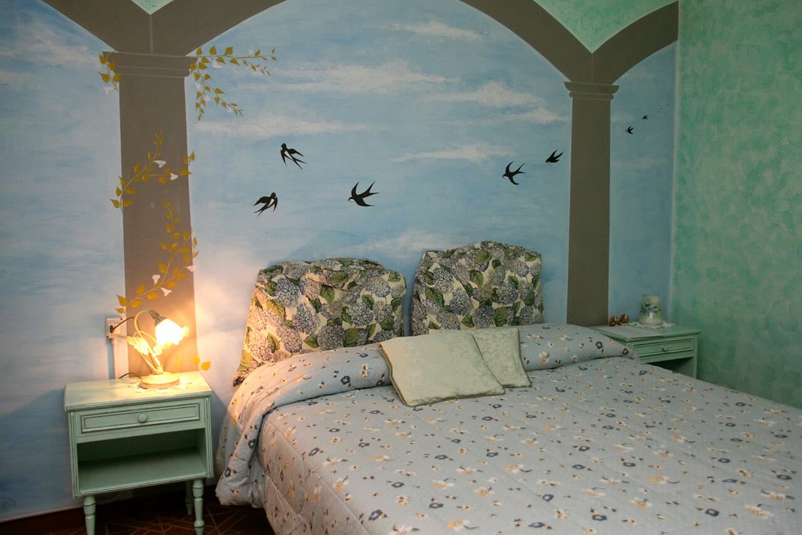
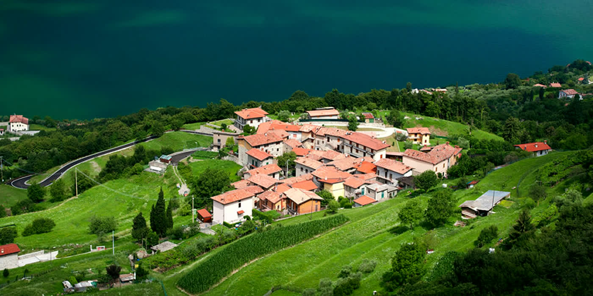
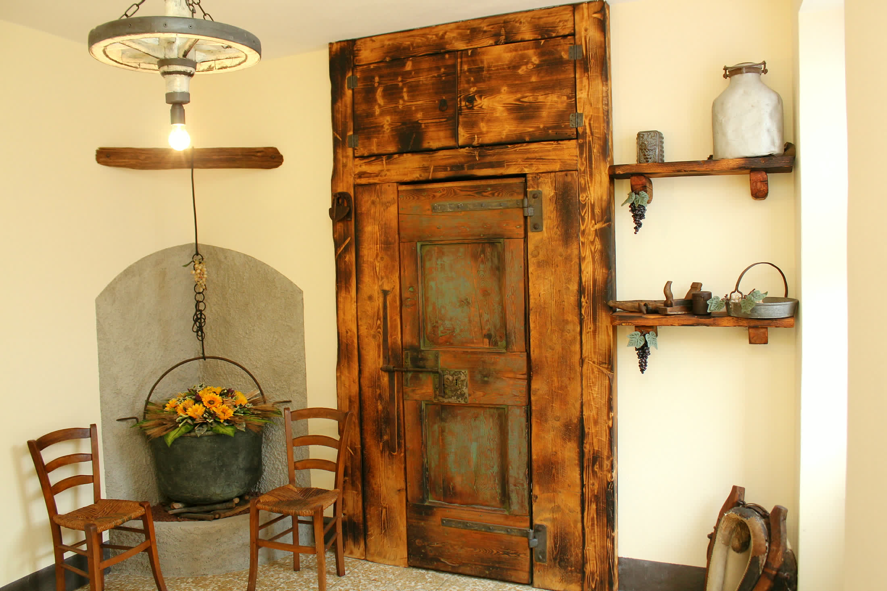
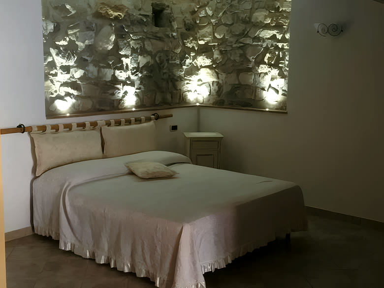
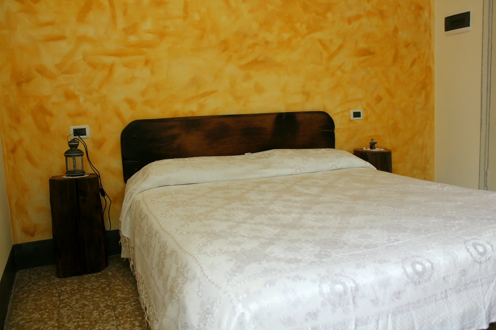
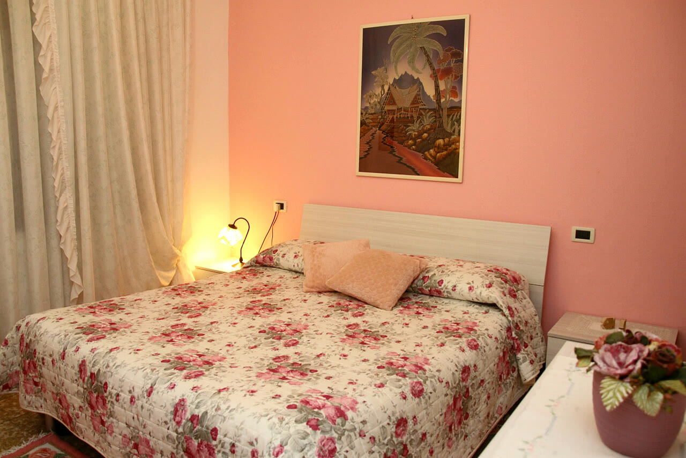
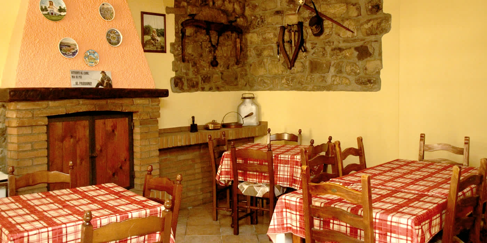

Primavera
Sulla parete dietro il letto è dipinto un arco che si apre su un cielo con le rondini. È la camera che ospita più persone: quattro.
- 4 persone
- 1 letto matrimoniale
- 1 divano letto
- Colazione in camera
- WiFi

Monte Isola · Lago d'Iseo
Quattro camere nell'abitato di Cure, nella parte alta dell'isola, poco distante dalla Madonna della Ceriola. Pranzo e cena su richiesta, per chi dorme da noi.
La foresteria
La Foresteria è situata nell'abitato di Cure, nella parte alta dell'isola, poco distante dalla Madonna della Ceriola che domina Monte Isola. Il borgo è collegato con le località più frequentate della costa da un comodo pulmino.
Grazie alla sua posizione, lontana dalle zone più frequentate dell'isola, si gode di una estrema tranquillità.
Facendo due passi nel piccolo borgo si ha una vista che spazia dalla parte settentrionale del Sebino alla costa bergamasca, fino alla parte sud del lago con Iseo, le Torbiere, la Franciacorta e la pianura.

Le camere
Tutte le camere presentano un bagno privato con bidet e vasca o doccia. La connessione WiFi è gratuita e gli animali domestici sono ammessi.

Sulla parete dietro il letto è dipinto un arco che si apre su un cielo con le rondini. È la camera che ospita più persone: quattro.

La pietra a vista, illuminata dall'alto, occupa tutta la parete dietro il letto, con una testiera ricavata da un palo di legno.

La parete gialla a spatolato fa da sfondo a una testiera in legno scuro sagomata, con un comodino ricavato da un ceppo di massello e una lanterna sopra. Porta il nome del lavoro che reggeva l'economia di un tempo, quando dai pascoli si ricavavano latte, burro e formaggio.

Si chiama così per la sua gradevolezza, la tranquillità e il comfort: i fiori sul letto, il quadro alla parete, la luce bassa della lampada.

A tavola
Per chi prenota una camera da noi, su richiesta, è possibile pranzare o cenare in foresteria.
La colazione si può avere in camera nella Primavera e nella Romantica.
Fotografie
Dove siamo
Siamo nell'abitato di Cure, nella parte alta dell'isola. Il borgo è collegato con le località più frequentate della costa da un comodo pulmino.
Siamo in un'area rinomata per l'equitazione e abbiamo il noleggio biciclette.